Documentation
Oft gestellte Fragen (FAQ)
Blog
History
Donations
French
Link Shell Extension (LSE) ermöglicht das erstellen von
Hardlinks, Junctions,
Volume Mountpoints,
und Symbolic Links,
(hier zusammenfassend als Links bezeichnet), einen Prozess zum klonen von Ordnern welcher
Hardlinks oder Symbolic Links verwendet sowie einen Kopierprozess welcher sich um Junctions, Symbolic Links, und Hardlinks kümmert.
LSE, wie der Name schon sagt als Shell-erweiterung implementiert und wird über den Windows explorer oder ähnliche Dateimanager aufgerufen.
Die Erweiterung erlaubt es dem Benutzer, eine oder mehrere Dateien oder Ordner auszuwählen und dann mit der Maus die Erstellung der gewünschten Links -
Hardlinks, Junctions oder Symbolic Links - abzuschließen oder im Falle von Ordnern Klone zu erstellen, die aus Hard oder Symbolic Links bestehen.
LSE wird auf allen Windows-Versionen unterstützt, die NTFS Version 5.0 oder höher, Windows7/8/10,
unterstützen. Hardlinks, Junctions und Symbolic Links werden auf FAT-Dateisystemen NICHT unterstützt,
ebenso wenig wie der Prozess des Klonens und Smart Copy auf FAT-Dateisystemen.
Um LSE zu installieren muss man das Installations programm
(HardLinkShellExt_$(platform).exe) ausführen.
Folgen Sie den Anweisungen des Programms, es sind keine manuellen Eingaben bei der Installation
erforderlich. Es ist möglich, den Speicherort zu ändern, in den die LSE installiert wird, die
Standardeinstellung ist
C:\Program Files\LinkShellExtension
Smartscreen pop-up
Bei Windows 10 besteht die Möglichkeit das der Windows defender sie warnt:
Windows protected your PC
Windows Defender SmartScreen prevented an unrecognized app from starting. Running this app might put your PC at risk.
In diesem Fall wählen sie "Trotzdem Installieren" aus. LSE ist mit dem Standard Code Signing Certificate ausgezeichnet, jedoch nicht mit dem
EV Code Signing certificate,
welches Smartscreen am eingreifen hindern würde.
Explorer Restart
Während der Installation muss Explorer.exe neugestartet werden,damit die Link Shell Extension activiert wird.
Das bedeutet, dass alle ausstehenden Operationen mit explorer.exe unterbrochen werden,
sie können sich jedoch entscheiden, den Neustart von explorer.exe zu verschieben.
Ein Dialogfeld gibt Ihnen diese Möglichkeiten während der Installation.
Silent install
/S zeigt während der Installation keine Eingabeaufforderungen an. Wenn die Befehlszeilenoption /S verwendet wird, wird der explorer.exe nach der Installation neu gestartet, um die Link Shell Extension sofort zu aktivieren
Specify Language
/LANGUAGE übergibt die Sprache, in der die LSE angezeigt wird. z.B.
HardLinkShellExt_$(platform).exe /S /Language=English Momentan sind Englisch, Chinesisch, Tschechisch, Französisch, Deutsch, Griechis, Italienisch, Japanisch, Koreanisch, Polisch, Portugisisch, Russisch, Slovakisch, Spanisch, Swedisch, Türkisch and Ukrainisch verfügbare Sprachen für /Language
Specify Directory
Wenn die unbeaufsichtigte Installation verwendet wird kann ein Dateipfad mit mit /D spezifiziert werden z.B.
HardLinkShellExt_$(platform).exe /S /Language=English /D=C:\Program Files\LSE
Uninstall
LSE kann auch unbeaufsichtigt deinstalliert werden indem man den Befehl $LSEInstallDir/uninst-HardLinkShellExt_$(platform).exe /S ausführt Wenn der /S schalter während der deinstallation benutzt wird, startet sich explorer.exe neu, um Link Shell Extension zu deaktivieren.
No Check for VcRedist
Bei manchen Windows10 Installationen ist ers nicht nötig vcredist zu installieren, oder schlimmer, vcredist kann nicht installiert werden, ist jeodch irgendwie schon auf dem System. Um dies zu ümgehen, kann der /noredist-Schalter per Kommandozeile übergeben werden. z.B.:
HardLinkShellExt_$(platform).exe /noredist
Installation
choco install linkshellextension
in einem Command prompt ausführt. Stellen sie sicher, dass chocolatey installiert ist. Der angemeldete Benutzer benötigt Administratorrechte um die software via choco zu installieren.
Um einen Hardlink zu erstellen, muss ein Ziel Ordner ausgewählt werden. Wenn Sie mit der Maus auf den Zielordner klicken, öffnet sich ein Menü, das den Eintrag - Drop HardLink
Drop HardLink erstellt einen Hardlink im gewünschten Ordner.
Overlay Icons for Hardlinks
Um Hardlinks von anderen Dateien unterscheiden zu können wird ein overlay icon angezeigt,
Overlay icons für Hardlinks können auch angepasst werden.v
Um eine Überfüllung des Popup-Menüs zu vermeiden, wird ein Untermenü angeboten, das die verschiedenen Arten von Links enthält, die auf Ordner anwendbar sind.
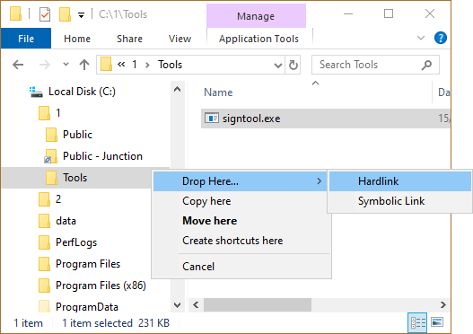
LSE verwendet die gleiche Hydraulik wie explorer, wenn es um mehrere '$filename - Hardlink' geht: Sie verwendet Zahlen, um mehrere Hardlinks einer Datei im gleichen Verzeichnis aufzuzählen, z.B. $filename - Hardlink (2).$ext.
Der Mechanismus der automatischen Umbenennung wird auch verwendet, wenn Junctions, Hardlink- Klone, symbolische Links, symbolische Link-Klone, Mountpoints oder Smart Copies im gleichen Verzeichnis erstellt werden.
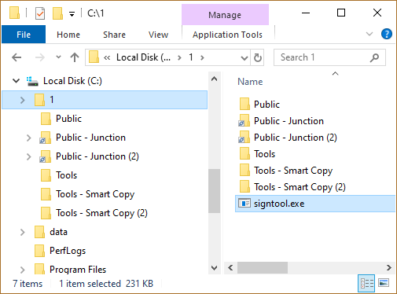
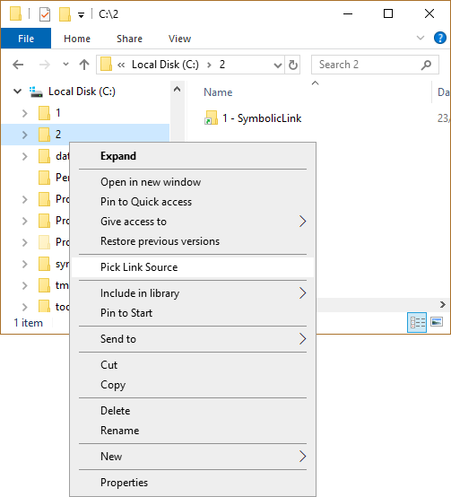
Junctions werden auf die gleiche Weise wie Hardlinks erstellt, , mit der Ausnahme, dass der Source Link ein Ordner und nicht eine Datei ist. Wählen Sie einen Ordner, klicken Sie mit der rechten Maustaste, wählen Sie Pick Link Source aus dem Aktionsmenü, navigieren Sie zum Zielordner, klicken Sie auf die Aktionstaste, öffnen Sie das Untermenü Drop As ... und wählen Sie Junction:

Junctions sind mit einem kleinen Kettensymbol unterhalb des Ordnersymbols gekennzeichnet.
Junctions können auch per Drag and Drop erstellt werden, indem die ausgewählten Ordner mit dem Actionbutton in einen Zielordner gezogen werden; wenn die rechte Maustaste losgelassen wird, wählen Sie das Untermenü Drop Here ... und dann Junction..
Overlay Icons for Junctions
Um die Unterscheidung von Junction Ordnern von normalen Ordnern zu erleichtern, ist an Junctions ein Symbol implementiert, das ein kleines dreigliedriges Kettensymbol unter dem Ordner anzeigt.
Die Symbole für Knotenpunkte können ebenfalls angepasst werden.
Junctions können sich über Netzlaufwerke erstrecken, solange das Ziel ein zugeordnetes Netzlaufwerk ist. Leider können Junctions, die einen UNC-Pfad als Ziel haben, mit LSE erstellt werden, aber selbst Windows7/8/10 scheint einen Fehler zu enthalten, der die Dereferenzierung eines UNC-Pfads in einer Junction verhindert, selbst wenn LSE die Reparse-Informationen für UNC-Knoten korrekt einrichtet. Wenn eine UNC-Zielkreuzung im Explorer doppelt angeklickt wird, erscheint der Fehler ERROR_INVALID_REPARSE_DATA(4392), the reparse info for UNC junctions. When a UNC target junction is der Sie darauf hinweist, dass die Information im Reparse-Punkt illegal ist, auch wenn sie es nicht ist.
@Microsoft: Warum haben Sie diese Funktion nicht für Knotenpunkte aktiviert, auch wenn die Syntax für UNC-Knotenpunkte definiert ist? \???\UNC\ server/share. Jede Hilfe ist willkommen.
Elevation wird z.B. in c:\Programmdateien für Junctions benötigt, die in c:\Programmdateien erstellt werden. Aus diesem Grund muss der berühmte UAC Dialog anerkannt werden.
Um genau zu sein nur die Erstellung von Verzeichnissen benötigt in solchen Situationen Elevation, aber die Erstellung eines leeren Verzeichnisses ist ein wichtiger Teil der Erstellung einer Kreuzung. Das DeviceIoControl(), das die eigentliche Arbeit bei der Erstellung von Abzweigungen leistet, würde ohne Elevation funktionieren.
Symbolic Link
Mountpoint
Um diese Funktion zu nutzen, wählen Sie ein exsistierendes Verzeichnis als Link Source, und ziehen Sie es über eine Junction/Symbolic Link/Mountpoint. Indem sie die 'Drop as ... Replacement Junction/Symbolic Link/MountPoint' Funktion auswählen, wird das Ziel einer existierenden Funktion durch das neu ausgewählte ersetzt.
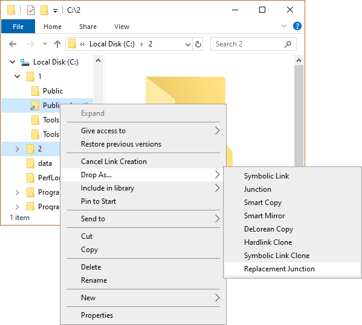
Das selbe kann mithilfe von Drag and Drop für Symbolic Link Directories, Junctions und Mount Points, jedoch nicht für Symbolic Link files erreicht werden. Symbolic Link files müssen mithilfe der 'Pick Link Source','Drop as ... Replacement Symbolic Link' ersetzt werden.
Falls der backup M odus ausgewählt ist, werden die ACLs der Junctions/Symbolic Links/MountPoints erhalten.
Symbolic Link
Mountpoint
Link Shell Extension kann existierende Junctions/Symbolic Links/MountPoints entweder mit Pick/Drop oder mit Drag and Drop kopieren.
Um diese Funktion zu nutzen, wählen Sie einfach eine bestehende Junction, einen symbolischen Link oder MountPoint als Linkquelle aus und legen Sie diese über ein bereits bestehendes Verzeichnis. Durch Auswahl der Funktion 'Ablegen als ... Junction/Symbolic Link/MountPoint Copy' aus dem Aktionsmenü wird der Junction/Symbolic Link/MountPoint auf das Ziel kopiert und die Beziehung angepasst
Dasselbe kann durch Drag and Drop für Verzeichnisse, Knotenpunkte und Mount Points für symbolische Verbindungen erreicht werden.
Wenn der Sicherungsmodus ausgewählt wird, bleiben die ACLs der Verbindung/des symbolischen Links/MountPoint erhalten.
Bei Hardlinks verhält es sich wie folgt:
Wenn man sich das obige Bild genau ansieht, kann man drei verschiedene Arten von Dateien finden:
| Normale Dateien |
Die Datei B ist eine normale Datei. Sie wird wie jedes andere Kopierwerkzeug kopiert.
|
| Saturated Hardlinks |
Die Dateien E und F sind fest miteinander verbunden.
In der LSE werden sie als gesättigte Hardlinks bezeichnet, weil die Referenzzahl,
die hier 2 ist, mit der Anzahl der Vorkommen unter 'Ordner 1', die hier 2 ist, übereinstimmt.
Allgemeines: Ein Hardlink wird in Bezug auf einen Ordner F als gesättigt bezeichnet, , i wenn die Anzahl der Vorkommnisse unterhalb des Ordners F mit der Referenzzahl übereinstimmt. Saturated Hardlinks können vollständig über Smart Copy kopiert werden. |
| Unsaturated Hardlinks |
Die Akten A, C, D sind fest miteinander verbunden. In der LSE werden sie als ungesättigte Hardlinks bezeichnet,
weil die Referenzzahl, die hier 3 ist, nicht mit der Anzahl der Vorkommen unter 'Ordner 1', die hier 2 ist, übereinstimmt. Nur C und D liegen unter Ordner 1.
Allgemeines: Ein Hardlink wird in Bezug auf einen Ordner F als ungesättigt bezeichnet, Ordner F als ungesättigt bezeichnet, wenn die Anzahl der Vorkommnisse unterhalb des Ordners F kleiner als die Referenzzahl ist. Ungesättigte Hardlinks können mit Smart Copy nur teilweise kopiert werden. Im obigen Beispiel sind C und D am Zielort hardlinked miteinander verbunden, aber die Hardlink zu A ist unterbrochen. Das bedeutet, dass die Referenzzahl von C und D zusammen mit dem Zielort 2 beträgt. |
Bei Junctions oder symbolic Linkverzeichnisen ist das Standardverhalten beim Smartcopy wie folgt:
Wenn man sich das obige Bild genau ansieht, kann man drei verschiedene Arten von Ordnern/Verknüpfungen finden:
| Normale Ordner |
Der Ordner 'Ordner 3' ist ein normaler Ordner. Er wird mit seinem Inhalt kopiert, wie es jedes andere Kopierwerkzeug tun würde.
|
|
Inner Junctions Symlinks |
Der Ordner 'Inner Junction/Symlink' ist auf 'Inner Junction/Symlink Target' ausgerichtet.
In LSE Begriffen wird diese Art von Ordner als 'Inner Junction/Symlink' bezeichnet,
weil sein Ziel auf einen Ordner zeigt, der unterhalb des gemeinsamen 'Ankers' 'Folder 1' liegt.
Inner Junctions/Symlink werden über Smart Copy am Zielort ordnungsgemäß wiederhergestellt. |
|
Outer Junctions Symlinks |
Der Ordner 'Outer Junction/Symlink' ist auf den Ordner
'Outer Junction/Symlink Target' ausgerichtet. In LSE Begriffen wird diese Art von Ordner
Outer Junction/Symlink' genannt, weil sein Ziel auf einen Ordner zeigt,
der parallel und damit ausserhalb des Ankers 'Folder 1' liegt.
Outer Junctions/Symlink können auf drei verschiedene Arten gehandhabt werden. Bitte beachten Sie den Abschnitt über Outer Junction/Symlink Handling. |

Wenn man sich das obige Bild genau ansieht, kann man drei verschiedene Arten von Dateien/symbolischen Links finden links:
| Normale Dateien |
Die Datei A ist eine normale Datei. Sie wird wie jedes andere Kopierwerkzeug kopiert.
|
|
Inner Symbolic Links |
Der symbolische Link 'Inner Symlink' ist auf 'Inner Symlink Target' ausgerichtet.
In den Begriffen der LSE wird diese Art von symbolischem Link Inner Symlink genannt,
weil sein Ziel auf eine Datei zeigt, die sich unterhalb des gemeinsamen Ankers 'Ordner 1' befindet.
Innere Symlinks werden mittels Smart Copy am Zielort korrekt wiederhergestellt.
|
|
Outer Symbolic Links |
Der Symlink 'Outer Symlink' ist auf den Ordner 'Outer Symlink Target' gerichtet.
In LSE-Begriffen wird diese Art von symbolischem Link
'Outer Symlink' genannt, weil sein Ziel auf eine Datei zeigt,
die parallel und damit ausserhalb des Ankers 'Ordner 1' liegt.
Outer Symlink Outer Symlinks werden von Smart Copy in Abhängigkeit von der Behandlung von Outer Junction/Symbolic Link gehandhabt. |
Smart Copies werden auf die gleiche Weise wie Junctions erstellt, wählen Sie einen Ordner, benutzen Sie den Actionbutton und wählen Sie Pick Link Source aus dem Aktionsmenü...
...Navigieren Sie zum Zielordner, drücken Sie die Aktionstaste, öffnen Sie das Untermenü Drop As ... und wählen Sie Smart Copy:
Smart Copy ist ein Muss, wenn z.B. der gesamte Inhalt einer Festplatte, die viele Hardlinks/Verknüpfungen/symbolische Links hat, auf eine andere Festplatte kopiert werden soll. Während des Smart Copy-Vorgangs werden auch leere Ordner kopiert und die Datums-/Zeitstempel der Ordner/Verknüpfungen/symbolischen Links werden ebenfalls an den entsprechenden Zielorten wiederhergestellt.
Da Smart Copy innere Hardlinks/Verknüpfungen/symbolische Links erstellt, ist diese Funktion nur auf NTFS-Volumes verfügbar.
Wenn Smart Copy länger als 250msec dauert, zeigt ein Fortschrittsbalken den Status des Smart Copy-Vorgangs an
Smart Copy verarbeitet alle verfügbaren alternativen NTFS-Streams einer Datei.
Wenn am Zielort bereits Artikel vorhanden sind, kopiert Smart Copy nur dann, wenn die Dateien/Symbolische/Knoten/MountPoints neuer sind als die bereits vorhandenen Artikel.
Bei der Wiederherstellung symbolischer Links verzweigt LSE ihren Helfer LSEUacHelper.exe, um diese Operation an sie weiterzuleiten, da die Erstellung symbolischer Links eine Erhöhung benötigt und somit den berühmtenUAC-Dialog aufruft.
Die LSE gibt ihren Helfer LSEUacHelper.exe nur dann aus, wenn sich ein Symlink in/unter den ausgewählten Ordnern befindet. Sie spart Ihnen also eine UAC-Eingabeaufforderung, wenn Sie keine Symlinks in Ihrer Auswahl haben.
Smart Copy erstellt während der Smart Copy Operation standardmäßig
Command Line
Die Smart Copy-Funktion ist auch über die Befehlszeile von
n.exe über den Befehlszeilenschalter verfügbar.
Outer Junctions/
Symbolic Links
| Crop |
Crop bricht Links zu Outer Junctions/Symlink-Verzeichnissen im Zielgebiet ab.
Crop funktioniert auch für Outer Symlink-Dateien. Im obigen Beispiel wird Ordner1 in Zielordner1 kopiert, aberOuter Junction/Symlink ist im Ziel nicht verfügbar, weil Ordner1/Outer Junction/Symlink auf Ordner0/Outer Junction/Symlink Target zeigte, der nicht unterhalb von Ordner1 liegt. Das Ziel hinter dem Beschneiden von Outer Junctions/Symlink Directories ist es, bei Smart Copy, Smart Mirror, Delorean Copy und Clone eine reine Kopie ohne Verbindungen zur Quelle zu erhalten.
Crop für äußere Verbindungen/Symbolische Links aktivieren |
| Unroll |
Unroll folgt Outer Junctions/Symlink Directories und baut den Inhalt
von Outer Junctions/Symlink Directories innerhalb der Hierarchie am Zielort neu auf.
Unroll gilt auch für Outer Symlink Files, d.h. Unroll bewirkt, dass das Ziel von Outer Symlink Files an den Zielort kopiert wird. Im obigen Beispiel wird Ordner1 in den Zielordner/Ordner1 kopiert, und Outer Junction/Symlink und alle Dateien/Verzeichnisse unter Outer Junction/Symlink Target werden in den Ordner Outer Junction/Symlink im Zielordner kopiert. Das Ziel hinter dem "Ausrollen" von Outer Junctions/Symlink-Verzeichnissen ist es, alles zu erhalten, mit dem die Quelle verbunden ist, und es als separate Kopie am Zielort wieder aufzubauen. Es ähnelt dem 'Haar des Elefanten'-Muster: Ziehen Sie an einem Elefantenhaar, und Sie erhalten den ganzen Elefanten. Unroll ist das Standardverhalten für Smart Copy, Smart Mirror, Delorean Copy und Clone. Fortgeschrittene Gedanken zum "Ausrollen" Das obige Bild war nur der einfachste Fall, denn Unroll tut viel mehr, wenn es auf komplexe Situationen trifft. Denken Sie an einen äußeren Knotenpunkt/symbolischen Link, der selbst Knotenpunkte/symbolische Links enthält, die in Bezug auf den ersten äußeren symbolischen Link des Knotenpunktes innen liegen: Im obigen Beispiel wird Ordner1 nach Ziel/Ordner1 und Äußere Kreuzung/Symlink kopiert und wie erwartet ausgerollt, aber da Kreuzung/Symlink eine innere Kreuzung in Bezug auf das Ziel Äußere Kreuzung/Symlink ist, wird die Kreuzung/Symlink-Beziehung im Ziel wiederhergestellt. Diese Art der Verschachtelung kann sehr viel komplexer sein: Im obigen Beispiel wird Ordner1 nach Ziel/Ordner1 und Äußere Kreuzung/Symlink kopiert und wie erwartet ausgerollt, aber dann beginnt es faszinierend zu werden, denn wir haben zwei Ebenen von äußeren Kreuzungen/Symlinks, die alle entsprechende innere Kreuzungen/Symlinks haben und die ordnungsgemäß wiederhergestellt werden. Sobald Sie sich durch das obige Bild durchgegraben haben, haben Sie es geschafft. Es ist nicht einfach, ich weiß, aber es ist notwendig, richtig auszurollen. Und die Komplexität nimmt zu, wenn sich symbolische Linkdateien innerhalb entrollter äußerer Verzweigungen/symbolischer Links befinden: Im obigen Beispiel wird Ordner1 nach Ziel/Ordner1 und äußere Kreuzung/Symlink kopiert und wie erwartet ausgerollt, aber er enthält einen Inner Outer Symlink, der auf das Inner Outer Symlink-Ziel zeigt, und dies ist eine innere Kreuzung/symbolic link in Bezug auf äußere Kreuzung/Symlink-Ziel Erwähnenswert ist jedoch der Symbolische Link Äußerer Symlink, der ein definitiver äußerer symbolischer Link wäre, aber da sein Ziel, das übergeordnete Verzeichnis Äußere Kreuzung/Symlink Target, ausgerollt wird, wird der äußere Symlink zu einem inneren symbolischen Link in Bezug auf Ordner1.
Datei1 Symlink ist ebenfalls ein äußerer symbolischer Link, aber sein Ziel, übergeordneter Ordner2 hat nicht das Glück,
ausgerollt zu werden, so dass im Ziel Datei1 Symlink nicht mehr ein symbolischer Link ist, sondern eine Kopie des Ziels der symbolischen Links.
Verschachtelte Reparse Points sind ebenfalls ein interessanter Anwendungsfall, mit dem sich der Algorithmus auseinandersetzen muss: Im obigen Beispiel wird Ordner1 nach Destination und Junction/Symlink F0 kopiert und wie erwartet ausgerollt, aber er enthält innere verschachtelte Reparse-Punkte. Verschachtelt bedeutet, Reparse-Punkte, welche auf andere Reparse-Punkte zeigt Die Ausrollfunktion eröffnet auch die Möglichkeit, zirkuläre Junction/Symbolic Link-Beziehungen zwischen einer Menge kopierter Elemente zu haben: Im obigen Beispiel wird Ordner1 über die Option --unroll nach Ziel-/Ordner1 kopiert. Smart Copy/Smart Mirror- und Delorean Copy-Operationen können mit den oben gezeigten Zirkularitäten umgehen und Zirkularitäten aufbrechen, indem sie der betroffenen Kreuzung/symbolischen Verbindung nicht folgen. Junctions/Symbolic Links können auch auf FAT-Laufwerke oder andere NTFS-Laufwerke verweisen, die als Voraussetzung eindeutige Disk-IDs auf allen Platten benötigen, die über Junctions/Symbolic Links miteinander verkettet sind:Hardlink-Geschwister werden durch Abgleich der pro NTFS-Volume eindeutigen Datei-ID gefunden. Wenn jedoch mehrere Volumes miteinander verkettet sind, kann es vorkommen, dass die gleichen Datei-IDs auf zwei verschiedenen NTFS-Volumes gefunden werden werden. Um dies zu beheben, verwenden alle Operationen die Datenträger-ID und die Datei-ID, um Hardlink-Geschwister zu finden. Außerdem ist es nicht erlaubt, die Platten-ID 0xffffff-ffffff zu haben, da die Algorithmen dies als internen Indikator eines FAT-Laufwerks verwenden. Die Option Ausrollen ermöglicht es auch, mehrere Knotenpunkte auf die gleiche Zielposition zu zeigen, was dazu führt, dass die Algorithmen die gleichen Elemente viele Male durchlaufen: Auf den ersten Blick sieht die Mehrfachdurchquerung von Elementen einfach aus, aber für Dateien bedeutet dies, dass mehrere durchquerte Dateien am Zielort gleich sind und fest miteinander verknüpft sind. Seien Sie also nicht verwirrt, wenn Sie Hardlinks sehen, die es noch nie zuvor gegeben hat. Auch das Kopieren von Junction/Symbolic Links von zugeordneten Netzlaufwerken erfordert besondere Sorgfalt, da sich Junctions auf einem entfernten Rechner mit Pfadreferenzen, die nur auf dem entfernten Rechner gültig sind, aufeinander beziehen: Das Beispiel in der obigen Abbildung zeigt eine solche Situation
|
| Splice |
Splice verbindet die Outer Junctions/Symlink-Verzeichnisse am Zielort wieder mit ihren ursprünglichen Zielen.
Im obigen Beispiel wird Ordner1 in Ziel/Ordner1 kopiert, und die äußere Kreuzung/Symlink ist am Ziel als Kreuzung verfügbar, die auf den ursprünglichen Standort Äußere Kreuzung/Symlink-Ziel zeigt. Das Ziel des splicings von Outer Junctions/Symlink Directories an ihren ursprünglichen Standort besteht darin, während des Smartcopy-Vorgangs eine Kopie zu erhalten, aber die Quellorte der Outer Junctions/Symlink Directories wiederzuverwenden. Die splice funktion ist auch nützlich, wenn Mountpoints kopiert werden sollen. Mountpoints sind den Junctions sehr ähnlich, zeigen aber auf einen Pfad, der immer mit \\\?\VolumeGuid{} beginnt. Splice für äußere Verbindungen/Symbolische Links aktivieren Splice can be selected via the configuration tool. |
In the above example Location1 and Location2 are copied to Destination. Location2/Junction20 is treated as inner junctions to Location1/Folder10 in the source, and that's why Destination/Junction20 points to Destination/Folder10 in the Destination.
The objective behind this is to treat all junctions/symlinks as inner junctions/symlins as long as they are in the set of source folders.
With LinkShell Extension this works as follows:
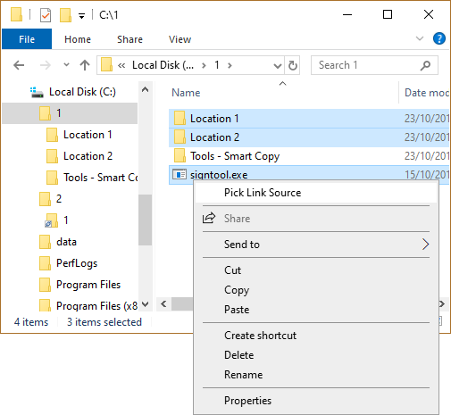
In the above example all content from Location 1 and Location 2 and pskill.exe are selected. Possible junctions/symbolic links in Location 1 pointing to Location 2 or vice versa are treated as inner junctions/symbolic links, because all selection is treated as a common root.
With junctions or symbolic link directories it behaves as follows:
By closely looking at the above picture one can find three different types of folders/junctions:
| Normal Folders |
The folder 'Folder 3' is a normal folder. It gets moved with its content straight forward.
|
|
Inner Junctions Symlinks |
The folder 'Inner Junction/Symlink' is targeted at 'Inner Junction/Symlink Target'.
In LSE terms this kind of folder is called Inner Junction/Symlink, because its target
points to a folder, which is below the common anchor 'Folder 1'. Inner Junctions/Symlink are updated properly via Smart Move in the destination location.
|
|
Outer Junctions Symlinks |
The folder 'Outer Junction/Symlink' is targeted at the folder 'Outer Junction/Symlink Target'.
In LSE terms this kind of folder is called Outer Junction/Symlink, because its target
points to a folder, which is in parallel and thus outside the anchor 'Folder 1'.
Outer Junctions/Symlinks are not touched by Smart Move and thus stay connected to their respective target. Please note that this is different to Smart Copy, which has 3 different ways to deal with Outer Junctions/Symbolic Links. |
The Smart Move functionality is integrated into Explorer seamlessly, so that you don't have to do anything special. Simply drag a folder in explorer to its destination location, or e.g. press F2 in Explorer to rename a directory and LSE will intercept this operation under the hood, takes care of junctions or symbolic links, and will update them.
Intercepting move and rename operation means, that LSE takes over control before rename/move, and recursivley searches the selected folder for junctions or symbolic links. But searching large amounts of files and folders takes time, so LSE will show a progress bar when searching takes longer than 250msec.
If symbolic links have to be updated LSE calls its UAC helper LSEUacHelper.exe.
If backup mode is enabled the UAC helper LSEUacHelper.exe is called anyway, because LSE needs to enumerate files in locations, where it might have no permissions.
Smart Move creates relative symbolic links during the Smart Move operation.
Enabling/Disabling Smart MoveSmart Move can be switched on/off via the configuration tool
Command Line
The Smart Move functionality is also available via command line from ln.exe
via the --move command line switch.
A folder tree might also contain Junctions or Symbolic Links. The clone process recreates inner junction/symbolic links at the destination location very similar as Smart Copy does.

Outer Junctions/Symbolic links are recreated with respect to the specified Outer Junction/Symbolic Link handling. e.g.
With Windows7/8/10 this cloning process is also available with Symbolic Links instead of Hardlinks.
Clones are created in the same way as e.g Junctions. Select a folder, click the Action button, choose Pick Link Source from the action menu...
...navigate to the destination folder, press the action button, open the Drop As ... submenu and select HardLink Clone:
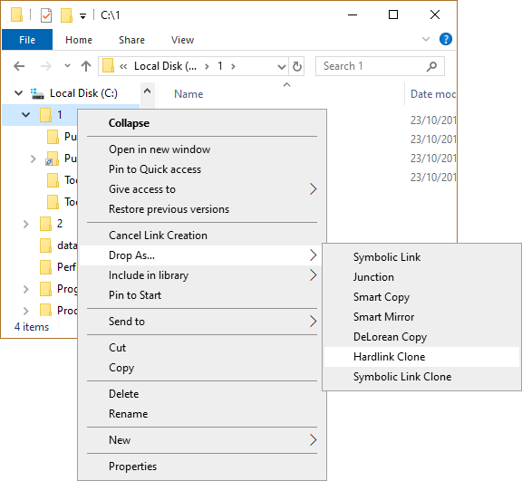
... choose Symbolic Link Clone to create clones of existing tree structures.

HardLink and Symbolic Link Clones can also be created via Drag and Drop, select a folder and drag with the action button depressed to a destination folder. When the action button is released open the Drop Here... submenu and select HardLink Clone or with Windows7/8/10 Symbolic Link Clone:
HardLink or Symbolic Link Clones are useful if you need to replicate a folder tree at a different location. The disk space required is minimal because the new structure consists entirely of NTFS directory entries with no real amount of actual data storage.
If both files and folders are selected as Source Links and dropped as a HardLink Clone then the selected files are dropped as Hardlinks alongside the HardLink Clones.
Because Clones use Hardlinks or Symbolic Links, they are only available within an NTFS volume. Hardlink Cloning can not replicate the folder structure from one disk volume to a different volume, because Hardlinks are limited to operation on a single volume. Symbolic Link Clones can be used to create volume spanning Clones.
When creating Clones, LSE forks its
helper LSEUacHelper.exe to forwards this operation to it, if the folder tree
contains symbolic links, because the creation of
symbolic links needs elevation, and thus brings up the
famous UAC dialog.
LSE only issues its helper LSEUacHelper.exe if a symlink is among/below the selected
folders, so it saves you from one UAC prompt if you don't have symlinks among your selection.
Command Line
The Clone functionality via Hardlinks or Symbolic Links is also available via
command line from ln.exe
via the --recursive command line switch.
- Smart Mirror copies if the timestamp of items in the Destination is different from the Source.
- Delete files not anymore available in Source from Destination.
Smart Mirror is created in the same way as e.g Junctions. Select a folder, click the Action button, choose Pick Link Source from the action menu...
...navigate to the destination folder, press the action button, open the Drop As ... submenu and select Smart Mirror:
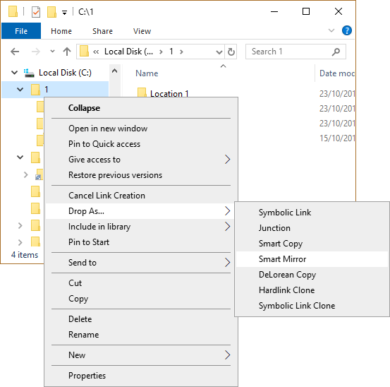
Smart Mirror is a little bit different with respect to Auto Rename, because it expects a already existing folder in the destination location, which has the same name as the source folder, so that it can do the mirror.
The following picture gives an overview what DeLorean Copy is about
In general a DeLorean Copy has 3 principals: Source(t), InitialBackup and Backup(n).
|
Phase 1: Intial SmartCopy
|
The folder Source(t) is initially copied to InitialBackup. This is shown by the blue arrow.
|
|
Changes happen |
During this phase the files under source change, and
Source(t) becomes Source(t+1).
|
|
Phase 2: Hardlink Clone |
The folder InitialBackup is Hardlink Cloned to
Backup1, which ties InitialBackup and Backup1. This is shown
by the red arrow.
|
|
Phase 3: Mirror |
Mirror the folder Source to Backup1. This
is shown by the green arrow:
|
The point is that all files in Backup1 are transparently accessible, but really little space is used, because not all files in the Source(t+1) changed, so that there was only the need to effectively copy over a few files from Source(t+1) to Backup1.
This can be repeated on and on. The second round would be using Source, Backup1 and Backup2 for DeLorean Copy:
|
Changes happen |
During this phase the files under source change, and
Source(t+1) becomes Source(t+2).
|
|
Phase 2: Hardlink Clone |
The folder Backup1 is Hardlink Cloned to Backup2,
which ties Backup1 and Backup2. This is shown by the red arrow.
|
|
Phase 3: Mirror |
Mirror the folder Source(t+2) to Backup2.
This is shown by the green arrow:
|
DeLorean Copies are created in the same way as e.g Junctions. Select a folder, click the Action button, choose Pick Link Source from the action menu...
...navigate to the destination folder, press the action button, open the Drop As... submenu and select DeLorean Copy:
If a DeLorean Copy was dropped the first time onto a directory, the operations, which are described under
phase 1 in the above descriptions, namely a Smart Copy, is performed. Link Shell Extension automatically
generated the folder name for the destination by appending a timestamp.
Any successive drop of a directory onto the a destination directory initates Phase 2 and Phase 3 from the
above description, namley it does the Hardlink Clone from the former backup onto the current backup and
furthermore does mirror the source onto the current backup.
A directory holding many copies may look like this.
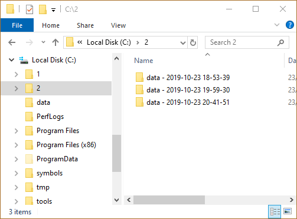
Limitations
It is little known, but NTFS has a limit to create a maximum of 1023 hardlinks to one file. For
DeLorean Copy this means that it will display an error message if this limit is exceeded, because
exceeding this limit means loss of data among the most recent backup sets:
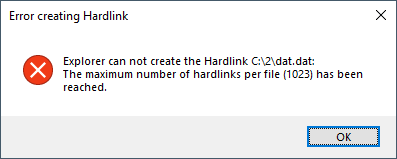
The reason for exceeding this limit could either be, that there have been more than 1023 backup sets
but no hardlinks within the Source, or there are hardlinks within the Source and less than 1023
backup sets.
The DeLorean Copy submenue will not appear if more than one folders are selected as source.
DeLorean Copy is long path safe which means it can handle more than 256 characters in pathes. This is
important, because placing a copy with quite long path, but still below 256 characters path length,
to destination locations might result in combined path length greater than 256 character. In such a situation
no data loss must happen, which Delorean copy guaranties with beeing 'long path safe'.
Please make sure that Explorer can not show you the result of such a copy, but the files are there.
Alternative explorers like SpeedCommander can handle this.
Command Line
DeLorean Copy functionality is also available via ln.exe
Backup mode enables LSE to also copy ACLs and Encrypted Files from all directories, even the ones without access for the current users.
- LSE always forks its helper process LSEUacHelper.exe, and thus raises the UAC prompt for elevation and password verification.
- Alternative Streams on files and folders
- EA Records on files and folders (rarely used)
- Reparse Info
- File Attributes
- Timestamps: Creation Time, Last Access Time, Last Write Time
- Sparse Files and Alternative Sparse Streams
- Encrypted files
- ACLs
Backup Mode is disabled by default, and can be turned on via the LSE configuration tool.
To perform backup operations a user must hold the SE_BACKUP_NAME and SE_RESTORE_NAME privileges.
An out of the box Wndows configuration assigns the Backup-Operator and Administrator group these privileges, but
additionally the above privileges can be assigned individually to certain users or groups.
Assigning privileges can be accomplished
By gpedit.msc
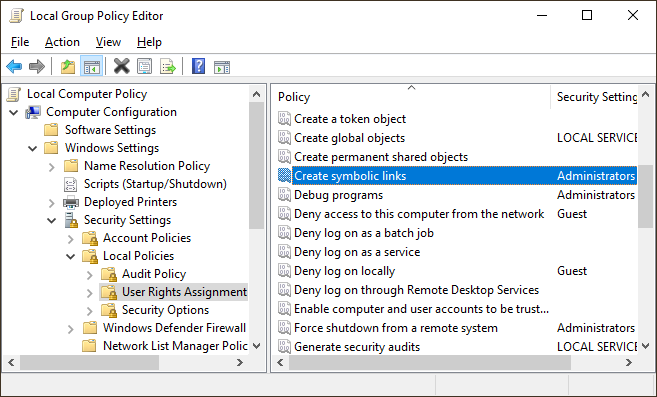
and navigating to
"Computer Configuration" ->"Windows settings" -> "Security Settings" -> "Local Policies" -> "User Rights Assignments" -> "Backup files and directories"
"Computer Configuration" ->"Windows settings" -> "Security Settings" -> "Local Policies" -> "User Rights Assignments" -> "Restore files and directories"
Without gpedit.msc
Download PolsEdit and add users or groups, who should be able to run
backups, to the SE_BACKUP_NAME and SE_RESTORE_NAME privileges.
Point Support
Volume Mountpoints provides functionality to map complete local volumes onto arbitrary disk locations. Volume Mountpoints were not supported in NTFS Version 4.0
Volume Mountpoints are created in the same way as Hardlinks, except that the Source Link is a volume rather than a file. Select a local volume, click the right mouse button, choose Pick Link Source from the action menu, navigate to the destination folder, click the action button, open the submenu Drop As ... and select Volume Mountpoint:
Volume Mountpoints can also be created via Drag and Drop when the selected local volume is dragged with the action button pressed to a destination folder; when the right mouse button is released, select the Drop Here ... submenu and then Volume Mountpoint.
Mount Points can be deleted by using the Unmount Volume command from Explorer as usual.
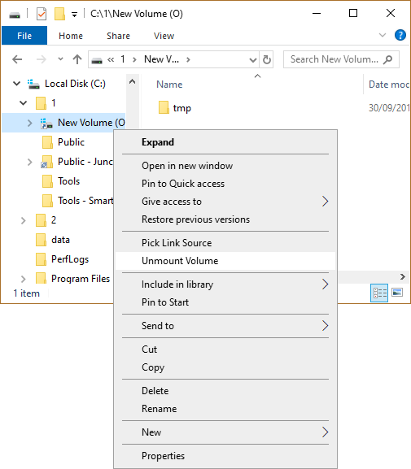
To show the origin of a Volume Mountpoint, the reference column of a Volume MountPoint shows the volume which is mounted onto the selected path.
Make sure that only local volumes can be mounted but not mapped network drives.
The creation and deletion of Volume Mountpoints is bound to successful elevation, which means that the famous UAC dialog must be acknowledged.
To show the reference counts, a column can be enabled in Explorers right pane by action clicking the Titles row of the details view.
After enabling the reference column the reference count is shown for each file.
Windows7/8/10: The column, which shows the reference count and the origin of the junction is not available, because the way Windows7/8/10 handles user defined columns has been completely revamped by Microsoft and all applications working with so called ColumnHandlers will not work.
Link Shell Extension also supports so called Explorer Property Sheets, which means that if a file or directory property in explorer is opened, Link Shell Extension adds its own tab to show the properties of a hardlink, junction, volume mountpoint or symbolic link.
This additional tab only shows up in the file or directory properties, if the file or directory is a hardlink, junction, volume mountpoint or symbolic link, otherwise this tab is not available.
Explore
For junctions, volume mountpoints or symbolic links this dialog also shows
a 'Explore Target' button, which opens an explorer in the specified directory.
Edit
For Junctions, Symbolic Links or Mountpoints the target field can be edited, and after either pressing the Apply button
or leaving the Link Property dialog with ok, the changes are applied to the Junction, Symbolic Link or Mountpoint.
If the Backup Mode is enabled, the ACL of the edited Junction, Symbolic Link or Mountpoint is preserved.
Creating a Symbolic Link is essentially the same as the other Link creation processes. Action click on the selected file(s) and select Pick Link Source(s) from the action menu.
When the destination folder is action clicked the menu contains a Drop As ... submenu, to create a Symbolic Link select SymbolicLink from the submenu. Unlike Hardlinks Symbolic Links can span storage volumes.
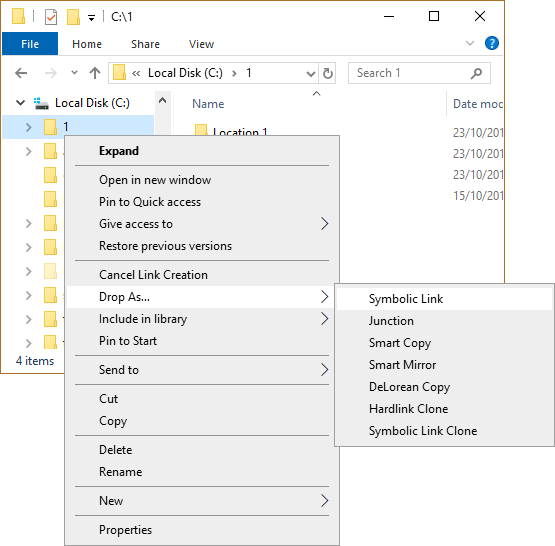
If both files and folders are selected as the Source Links and dropped as a Symbolic Link Clone then the selected files are dropped as Symbolic Links alongside newly created Symbolic Link Clone folders.
Symbolic Links can also be created between directories.
Relative versus absolute symbolic link target pathnames
The target of a symbolic link can either be
- a fully qualified path starting at the root of a drive, e.g e:\data\cpp\myfile.txt
- or can be be specified relativeley, e.g ..\..\data\cpp\myfile.txt
The configuration tool can switch Link Shell Extension in either
relative or absolute mode.
Overlay Icons for Symbolic Links
To help distinguish Symbolic Links from normal files/directories, an overlay icon is implemented on symbolic links that shows a light green arrow icon under the folder.
Overlay icons for Symbolic Links can also be customized.
@Microsoft: Symbolic links without elevation: Lets see if this paragraph
is read by someone. I don't know if it is a bug or a feature, but one
can create symbolic links without elevation, if you create a hardlink
from a symbolic link. That sounds weird, but it works. And by a closer
look at this stuff, it can be seen, that LSE really uses CreateHardlink()
and a symbolic link is created. MS guys! Your opinion?
@Microsoft: Symbolic can span network drives as long as the target is a drive letter mapped drive, but it fails for UNC names in symbolic link target with error ERROR_LOGON_FAILURE(1326), even if the network is connected properly.
Simply select a hardlinked file and select Properties from the right click action menu:
The Hardlink Enumeration functionality is also available via command line from ln.exe via the --enum or the --list command line switch.
Due to UAC some API calls need elevation to administrative level, and this elevation must be acknowledged via the below shown dialog box. So if you see the below box, and the program asking for elevation is LSEUacHelper.exe, it is Link Shell Extensions contribution to UAC and you must acknowledge it to get Symbolic Links created.

One way to come around the UAC prompt for the creation of Symbolic Links is to globally allow users to create Symbolic Links by changing the policy.
With gpedit.msc
Start gpedit.msc from the command line and grant/revoke specific users the permissions: Under
"Computer Configuration" ->"Windows settings" -> "Security Settings" -> "Local Policies" -> "User Rights Assignments" -> "Create Symbolic Links".
Without gpedit.msc
Download PolsEdit and add users to SE_CREATE_SYMBOLIC_LINK_NAME.
Linkshell Extension can deal with the above granting of privileges, and if the Symblic Link Privilege is available avoids the UAC prompt.
Developer mode in Windows10
Another way to come around the UAC prompt would be to
enable the developer mode,
which is available since Windows10/14972.
This feature is used by Link Shell Extension, to enable the creation of
so called Remote Hardlinks, Remote Junctions, or Remote Symbolic Links. e.g.
- Map a network share
- Pick a file from that share
- Drop the file as Hardlink within the same share
A Hardlink has been created, which can be easily verified
Furthermore SMB1.0 also reports the reference count for Hardlinks and the junction origin for Junctions, which enables Link Shell Extension to show the properties dialog for remote files. Currently the reference count of a hardlink is reported via SMB1.0 in 90% correctly, so please be aware of this restriction.
@Microsoft: Why does this happen in 90%? I have scanned my code in the meantime many times, and it is obvious, that the same call sometimes succeeds and sometimes not. Why??? If you wanna hunt down a bug in your code, please contact me!
LSE supports both, mapped network drives and UNC paths.
Mapped but not available network drives can in general be the reason for sloppy explorer startup performance. Delays of a few seconds can be experienced if explorer has to check all drive mappings, especially the ones which are not available. This gets worse, if LSE also checks the status of all drives.
To workaround this caveat the Remote Capabilities of Link Shell Extension
can be switched on/off via the configuration tool.
Remote Hardlinks and the SMB version
There are differnet SMB Version implemented in different Windows versions which means different
behaviour for hardlinks:
SMB1.0: Windows XP, Windows2000 ...
SMB2.0: Windows Vista ...
SMB2.1: Windows7/8, Windows Server 2008 R2 ...
SMB3.0: Windows10, Windows Server 2012 R2 ...
All of those version support the creation of hardlinks remotely, but since SMB2.0 one can not find out if a file on a remote drive is a hardlink or not.
This means, that e.g if you connect with your Windows XP machine to a SMB2.1 drive,
which is provided by a Windows7/8/10 machine, you will not be able to see overlay icons
for hardlinked files, but you will be able to create them remotley.
@Microsoft: Is this implementation since SMB2.0 a bug or a feature?
With removable media formatted to NTFS there is the slight chance that LSE reports
'Access denied' problems, when creating hardlinks or junctions. This is due to
file object permissions on the removable NTFS drive, which have been created with a different
computer on that removable media, thus causing this 'Access denied' messages. The solution
here is to change the permission on that removable media as Administrator.
On the other hand NTFS supports pathnames with up to 32767 characters, so one might have already experienced pathnames, which are longer than 256 characters. To deal with that, LSE can handle Very Long Path up to 32767 characters with all operations.
With the subst.exe command one can create driveletters, which point to certain path on a NTFS volume. This means that two
different driveletters in the end might resolve to locations on the same NTFS volume.
Link Shell Extension checks these situations when it comes to allow the creation of hardlinks, and as a consequence allows
the creation of hardlinks among different logical drives if they resolve to the same NTFS volume.
With Windows Server 2012 Microsoft introduced the
ReFS
filesystem, which is the designated successor to NTFS. But the first
implementation of ReFS can do nice things, but lacks a few important features from NTFS like the Hardlink support.
Link Shell Extension supports ReFS so that one can create Symbolic Links, Mountpoints, Junctions on ReFS volumes.
But it will throw an error message if a hardlink is about to be created on a ReFS volume. So what are the impacts on
Link Shell Extension in detail:
- ReFS drives as the destination of Delorean Copies will for sure fail, at least when creating the second backup in a Delorean set.
- SmartCopy/SmartMirror will fail as destination for hardlinks within the source.
- SmartMove will work.
FileSystems
There are a lot of filesystems out by third party vendors nowadays, which support hardlinks, symlinks...
In order to provide the LSE functionality on that drives, the supported filesystems can be configured:
Add your favourite filesystem name in a comma seperated list to
Changes to the known filesystems from the above registry key take efect after an explorer.exe restart.
If you don't know the name of the filesystem you might determine this by issuing
ln.exe from a command prompt.
By default Btrfs is configured as a known third party filesystem.
Configuring your favourite filesystem to be recognized by LSE is on your own risk. Basically LSE would do all operations to the configured filesystems, which it does to NTFS. So make sure your filesystem supports the same primitives as NTFS does otherwise certain operations will fail.

Localisation
Link Shell Extension's UI and commands are available in a few languages. You can choose from
- English(default)
- Chinese
- Czech
- French
- German
- Greek
- Italian
- Japanese
- Korean
- Polish
- Portuguese Brazilian
- Russian
- Slovak
- Spanish
- Swedish
- Turkish
- Ukrainian
Smart Move
It might be useful to totally switch off Smart Move,
if there are folders with really much folders.
This can be acchieved by ticking the Smart Move checkbox.
Logging
All output of a LSE operation like SmartCopy, SmartMirror, or Delorean Copy is logged to the file %TEMP%\LinkShellExtension.log
Remote Capabilities
It might be useful to totally switch off Remote Capabilities,
if there are lots of 'dead network drives' around.
This can be acchieved by ticking the Remote Capabilities checkbox.
Outer Junction/Symbolic Link Handling
Decide whether Outer Junctions should be handled as Crop,
be Unrolled, which is the default, or Spliced.
Symbolic Link Creation
By selecting either relative or absolute Link Shell Extension will
create the target of Symbolic Links respective.
Copy Mode
By checking the Backup Link Shell Extension will run in Backup Mode.
Changing any settings related to overlay icons will ask for a restart of explorer when Apply or Ok is pressed.
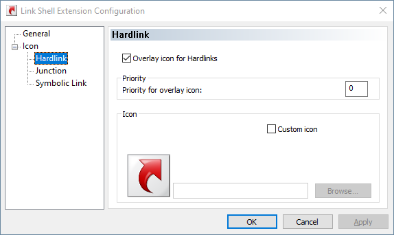
Overlay Icon
Sometimes it might be useful to totally disable certain overlay icons from Link Shell Extension, which can be acchieved by ticking the checkbox for overlay icons.
Priority
Only one overlay icon can be shown with an icon, but many overlay handlers might apply
to provide the overlay icon. To sort this out each overlay handler can specify a priority
to explorer and explorer shows the overlay icon with highest priority.
High priority means lower number, with 0 as the highest priority
Custom Icon
By ticking the checkbox for custom icon the Browse... button gets enabled,
and an icon can be selected.
Keep in mind that custom icons are specific to each user.
General
Windows7/8/10 are a little bit special, because overlay icons for 256x256 must not
be in the lower left corner of the icon, and must not be already smaller to perfectly 'overlay'
an icon. 256x256 overlay icons must fill up the complete available icon, and also must not be resized.
Or in other words Windows7/8/10 takes any 256x256 icon and resizes it to 92x92, moves it to the left lower corner and overlays.
For all other resolutions smaller than 256x256, Windows7/8/10 you have to prepare an overlay icon in the lower left corner.
For my investigations the icon editor of choice capable of dealing with Windows7/8/10 icons was RealWorld Icon Editor
Apply ChangesWhen you press OK or Apply on LSEConfigs dialog, settings will be taken over.
If changes were made to Link Shell Extensions language settings or
settings related to overlay icons, you will be asked to confirm a restart
of explorer.exe, so that your changes become effective. Restarting
explorer.exe means, that e.g. any copy operation or other pending operation
within explorer.exe is interrupted.
So what are Hardlinks? It is common to think of a file as being an association between a file name and a data object . Using Windows Explorer, the file system can be readily browsed, showing a 1:1 relationship between the file name and the data object, but this 1:1 relationship does not hold for all file systems.
Some file systems, including UFS, XFS, and NTFS have a N:1 relationship between file name and the data object, hence there can be more than one directory entry for a file.
So, how does one create multiple entries for the same data object? In Unix there is a command line utility ln, which is used to create link entries for existing files, hence there are many file names, or so called Hardlinks, for the one data object.
For each HardLink created, the file system increments a reference count stored with the data object, i.e. it stores how many file names refer to the data object, this counter is maintained (by the file system) within the data object itself. When a file name referencing a data object is deleted, the data object’s reference count is decremented by one. The data object itself only gets deleted when the reference count is decremented to zero.
The reference count is the only way of determining whether there are multiple file name references to a data object, and it only informs of their number NOT there whereabouts.
Junctions are wormholes in the tree structure of a directed graph. By browsing a Junction a maybe far distant location in the file system is made available. Modifying, Creating, Renaming and Deleting files within a junction tree structure operates at the junction target, i.e. if you delete a file in a Junction it is deleted at the original location.
Symbolic Links are to files what Junctions are to folders in that they are both transparent and Symbolic. Transparency means that an application can access them just as they would any other file, Symbolism means that the data objects can reside on any available volume, i.e. they are not limited to a single volume like Hardlinks. Symbolic Links differ from Shortcuts in that they offer a transparent pathway to the desired data object, with a shortcut (.lnk), something has to read and interpret the content of the shortcut file and then open the file that it references (i.e. it is a two step process). When an application uses a symlink it gains immediate access to the data object referenced by the symlink (i.e. it is a one step process).
- Supported platforms are NT4/W2K/WXP/W2K3/W2K3R2/W2K8/W2K8R2/W2K12/W2K12R2/WXP64/Vista/Vista/Windows7/8/10 in 32bit, 64bit or Itanium.
- Hardlinks can only be made on NTFS volumes, under the supported platforms.
- Hardlinks can only be made within one NTFS volumes, and can not span across NTFS volumes.
- Junctions can not be created on NTFS volumes with NT4.
- The Pick Link Source and Drop ... choices are only visible, if it’s possible to create Hardlinks/Junctions/Symbolic Links. E.G.: If you select a file on a FAT drive and press the action button, you wont see the Pick Link Source in the action menu, because FAT file systems, don't support Hardlinks/Junctions/Symbolic Links. This also happens, if you select source files on a network drive, or select a file as destination, etc.
- There is an OS limit of creating more than 1023 hardlinks per file. This is less known, but it is there.
- ReFs does not support hardlinks.
-
Q: On Windows7/8/10, the Save As... box shows symlinks with the white "shortcut"
overlay, instead of the green symlink overlay.
A: This happens if the processes shown during installation of Link Shell Extension were not closed. If you really run into this rare situation, a reboot will help.
-
Q: However the value of the reference count is not updated when hardlinks are deleted.
That is, when I add new hardlinks the value increases properly, but when I delete
hardlinks, the value does not change. Is that a bug? Or there is a way of refreshing
the Windows Explorer?
A: Once a file is deleted in Explorer it is moved into Recycle Bin, but not really deleted. If you press Shift-Del for deleting a file instead of just pressing Del, the file really gets deleted and the reference count is decremented.
-
Q: I could'nt make a successful hardlink for image or vector files - I mean, I was
able to *make* the hardlink copy, but when I modified one file it didnt affect the other.
I'm wondering do you know why this might be - could it be my otherwise quite normal computer (!)
or could it be something to do with the hard link proccess ?
A: You were able to make hardlinks successfully, but when you open a hardlinked file for edit, it depends on the editor associated to the file if the file either gets
- opened, changed, the original deleted, and the new one saved ( ==> link broken )
- opened, changed, and saved back ( ==> link alive )
-
Q: When I deleted a source directory, its junction point
is left behind in an non-operational state.
Is there a way to prevent this? That is, for example, is it possible to automatically delete the junction points if the associated source is deleted? Or, is it possible to have a program prune such orphaned junctions afterwards?
A: No sorry, Junctions are a one way relation, and if the targets disappears the junction points to an orphaned destination.
If you have SmartMove enabled, at least inner junctions/symbolic links are adapted
-
Q: When I delete a symbolic link, which points to a zipped folder
by pressing DEL, later on when I want to empty the recycle bin, explorer denies
by showing me error message 0x80071128. What's wrong?
A: Unfortunatley this is a bug in Explorer, and it only happens to symbolic links pointing to .zip files. The workaround is to move it manually out of recycle bin rename it, and then delete it once more.
-
Q: I have created a symbolic link to an .exe and when I double
click on it, I get the following error message:
The specified path does not exist. Check the path and try again.
A: Unfortunatley this is a bug in Explorer, and I don't have a clue how to come around this in explorer.
If you start the symlink to an .exe from a command prompt it works fine, and even third party explorers like SpeedCommander can do this, but explorer seems to have a limitation
Does anybody know the registry hack to enable this in explorer.exe? Drop me a line. -
Q: I double click on a symlink in explorer, which e.g. points to an .xls, and the explorer asks me to
choose a program to open it.
A: With KB3039066 Microsoft changed the behaviour of symlinks. Uninstall it and it will work again. See also Symbolic Link Type Changed
-
Q: The overlay icons do not show up
A: The number of different icon overlay handlers that the system can support is limited by the amount of space available for icon overlays in the system image list. There are currently fifteen slots allotted for icon overlays, some of which are reserved by the system.
All is controlled by the alphabetical order of OverlayHandlers under
HKEY_LOCAL_MACHINE\SOFTWARE\Microsoft\Windows\CurrentVersion\Explorer\ShellIconOverlayIdentifiers
If the OverlayHandlers for LinkShellExtension somehow slipped to a slot greater 15 under 32bit Windows or greater 11 with 64bit Windows, the LSE Overlay Icons won't show up.To manually boost the priority of LSE OverlayIcons open the above registry location with regedit and rename
HardLinkMenu --> 0HardLinkMenu
IconOverlayHardLink --> 0IconOverlayHardLink
IconOverlaySymbolicLink --> 0IconOverlaySymbolicLink
and either restart the explorer or log-off and log-on again. The point here is to change the alphabetical order by prepeding a 0. With Windows 10, a 0 might not help but prepending a blank should do it. See below: -
Q: The symbolic link overlay icons do not show up under Windows 10
A: See one FAQ above and raise the prio of IconOverlaySymbolicLink under
HKEY_LOCAL_MACHINE\SOFTWARE\Microsoft\Windows\CurrentVersion\Explorer\ShellIconOverlayIdentifiers
by prepending two blanks.
IconOverlaySymbolicLink --> ' 'IconOverlaySymbolicLink
and either restart the explorer or log-off and log-on again. The point here is to change the alphabetical order by prepeding blanks. -
Q: I'm trying to store Dropbox files only on removable storage instead of the
internal 128gb of storage. My DropBox already contains lots of files. How do I accomplish redirecting
the dropbox folder to the removeable storage?
A:
- Copy the whole dropbox folder from the internal storage under c:\users\[username]\dropbox to e.g x:\data\dropbox
- Rename the dropbox folder c:\users\[username]\dropbox to e.g c:\users\[username]\dropbox_org
- Pick Link Source x:\data\dropbox
- In c:\users\[username] use Drop as and select Symbolic Link or Junction
- If everything went fine finally delete c:\users\[username]\dropbox_org
-
Q: When I create Symbolic links they appear in Explorer as 0 bytes. I cannot remember if this is
expected or not?
A: The resulting Symbolic Links show as 0 bytes in explorer.exe, that's expected.
-
Q: I only changed the attribute of a file, even the timestamp and content are the same, but --delorean copies the
file instead of linking to the old backupsets and just changing the attributes in the current backup set.
A: The files in the backup sets of --delorean are hardlinked if they are the same. NTFS provides one set of timestamps and attributes for all hardlink-siblings of a file, so if a file needs different attributes in a backup, it has to be copied.
-
Q: Broken Junctions (with non-existent targets) have their overlay icons displayed, but right clicking on them in Windows Explorer of
Windows7 x64 SP1 and choosing "Properties" does not bring up the "Link Properties" tab.
Consequently the information where the broken Junction is trying to point is not accessible and cannot be corrected manually.
A: Unfortunatley this is an explorer problem, and LSE has no chance to intercept. Broken symlinks/juncitons can be easily repaired by the replacement junction/symbolic link feature
-
Q: When I right click a symbolic link and go to properties, and click on Link properties, if the path contained inside is invalid,
will give you the message "The name '(invalid path goes here)' specified in the Target box is not valid. Make sure the path and file name are correc.
A: Unfortunatley this is an explorer problem, and LSE has no chance to intercept. Broken symlinks/juncitons can be easily repaired by the replacement junction/symbolic link feature
| in progress |
Version 4.0.0.0
|
| February xx, 2020 |
Version 3.9.3.4
|
| November 8, 2019 |
Version 3.9.3.0
|
| December 28, 2018 |
Version 3.9.0.2
|
| December 2, 2018 |
Version 3.8.7.2
|
| April 19, 2016 |
Version 3.8.6.8
|
| January 10, 2016 |
Version 3.8.6.6
|
| June 3, 2014 |
Version 3.8.5.1
|
| December 29, 2013 |
Version 3.7.5.9
|
| August 23, 2013 |
Version 3.7.5.1
|
| August 4th, 2013 |
Version 3.7.5.0
|
| June 24th, 2012 |
Version 3.7.2.0
|
| March 9th 2012 |
Version 3.6.5.3
|
| April 17th 2011 |
Version 3.6.0.4
|
| November 21st 2010 |
Version 3.5.0.1
|
| October 3rd 2010 |
Version 3.4.0.2
|
| July 19th 2010 |
Version 3.3.5.8
|
| February 21st 2010 |
Version 3.2.2.4
|
| September 28th 2009 |
Version 3.1.6.0
|
| October 4th 2008 |
Version 3.0.0.1
|
| June 21st 2008 |
Version 2.9.5.3
|
| May 1st 2008 |
Version 2.9.0.3
|
| January 20th 2008 |
Version 2.8.0.6
|
| October 16th 2007 |
Version 2.7.1.0
|
| March 25th 2007 |
Version 2.7.0.1
|
| January 12th 2007 |
Version 2.6.0
|
| December 27th 2006 |
Version 2.5.1 released
|
| December 6th 2006 |
Version 2.4.0
released
|
| November 26th 2006 |
Version 2.3.0 released
|
| June 16th 2006 |
Version 2.2.2 released
|
| May 29th 2006 |
Version 2.2.1 released
|
| March 14th 2006 |
Version 2.1 released
|
| February 27th 2006 |
Version 2.0 released
|
| November 26th 2005 |
Version 1.7 released
|
| January 23rd 2002 |
Version 1.6 released
|
| October 27th 2001 |
Version 1.5 released
|
| March 23rd 2001 |
Version 1.201 released
|
| March 23rd 2001 |
Version 1.20 released
|
| March 20th 2001 |
Version 1.10 released
|
| May 8th 1999 | Version 1.00 released |
Felix Kasza for the hardlink basics with NT4.
Nullsoft for the great lean and mean nsis installer
Jean-Pierre Bergamin
for the
drag and drop
support samples.
Travis Illig
suggested to add the overlay icons for junctions, which he
uses in his
Junction Shell Extension.
Mark Russinovich for tips on
junction
Philip Daniels for a technical
writers documentation review
Daniel Thibault for the French
localisation, and for a dozen of bug reports and feature requests.
Masatoshi Kimura for the symbolic link
driver for WindowsXP.
Gerard Durand for the French translation of the documentation
- With Vista & Windows7 the column handler in explorer, providing the reference count, does not work, since Microsoft deprecated the interfaces with respect to this functionality.
- This program is provided as is. See license.txt from this distribution for legal issues.
- Link Shellextension uses tre as the regular expression machine. See the tre license.
LSE is and will be freeware, but if LSE was really helpful for you and saved lots of your time please think of donations either via PayPal
or by flattring me
or by sending me a gift certificate from
.
or by donating bitcoins:
bc1q4hvevwrmnwt7jg8vws0v8xajywhffl4gwca5av
Link Shellextension also has its page on Facebook , where you can find announcements for new releases, and you can discuss feature requests
Link Shellextension broadcasts its release notes via RSS .
|
All Windows 64 |
This version contains the 64bit version of Link Shell Extension, but also
contains a 32bit version, which is installed in parallel to the 64bit version, to satisfy third party
filemanagers/explorers like total commander: All neccesary runtime dlls are already installed on your system, but if not grab it from here for 64bit and here for 32bit |
|
All Windows 32 |
Simply download and install
All neccesary runtime dlls are already installed on your system, but if not grab it from here. |
|
Chocolatey Installation |
Link ShellExtension can also be installed via chocolatey by issuing
choco install linkshellextension |
Download
|
All Windows Itanium |
The Itanium version is not supported anymore, but the last VS2005 based version 3.8.7.2 is kept for legacy. Please make sure that the necessary runtime .dlls are installed on your system. This prerequisites package can be downloaded from Microsoft: Afterwards install the
|
| Windows NT4 |
The version for Windows NT4 will be no more activley developed
on, and its functionality is frozen with version
Link Shell Extension 3.2.0.0 (1.13Mb), which basically has all
the important features.
|
|
Windows 2000 Windows XP |
The version for Windows 2000 and for Windows XP will be no more activley developed on, and its functionality is frozen with
Link Shell Extension 3.8.7.2 (32 bit)
and
Link Shell Extension 3.8.7.2 (64 bit)
|
|
Symbolic Link Driver for Windows XP |
The driver to enable even WindowsXP with
symbolic link functionality
is provided courtesy of Masatoshi Kimura. You can download the driver from his
homepage or from my site acting as a mirror.
|